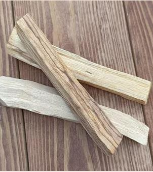
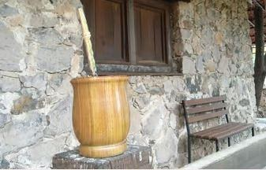
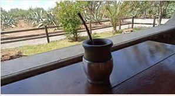

Quien probó un mate en un recipiente de palo santo difícilmente lo olvida: la madera le suma un aroma y un sabor que ningún otro material da. El problema es que es una madera muy sensible. Con los cambios de temperatura y de humedad se puede agrietar, e incluso partir, aunque se haya curado. Por eso vale la pena hacerlo con tiempo y con cuidado.
¿Qué es el palo santo?
El palo santo de los mates es un árbol del Gran Chaco, la región que comparten Argentina, Paraguay y Bolivia. Su nombre científico es Bulnesia sarmientoi. Tiene una madera dura, pesada y con aceites naturales que le dan su perfume característico: dulce, con notas cítricas.
No hay que confundirlo con otro árbol que también se llama palo santo (Bursera graveolens), que crece en la costa del Pacífico y es el que se usa como incienso para aromatizar ambientes.

Por qué hay que curarlo
Curar el mate prepara la madera para el contacto diario con el agua caliente y la yerba. La grasa que se aplica primero la hidrata y la sella; la yerba húmeda después termina de asentar el sabor. Un mate de palo santo que no se cura tiene muchas más chances de rajarse en los primeros usos.

Paso a paso
- Enjuagalo con agua tibia para sacar el aserrín y los restos de madera. Tibia de verdad: que la puedas tocar sin molestia, unos 45 °C como máximo.
- Secalo bien con un repasador limpio o papel de cocina, y dejalo airear a la sombra. Nunca al sol ni cerca de una fuente de calor.
- Untalo con manteca o aceite, por dentro y por fuera, sin dejar partes sin cubrir. Cuando la madera absorba la grasa y se vea seca, volvé a untarla.
- Mantenelo humectado así durante 2 o 3 días, repitiendo cada vez que lo veas seco.
- Sin enjuagar la grasa, llenalo con yerba nueva hasta las tres cuartas partes y agregá agua tibia, a la misma temperatura del primer enjuague, hasta que la yerba llegue al borde.
- Dejalo así toda la noche, o hasta 24 horas. Si la yerba se seca, volvé a humedecerla con agua tibia.
- Vacialo, enjuagalo y listo. Ya podés empezar a usarlo.
Los primeros mates
La madera del palo santo se comporta un poco como el vidrio: no soporta los cambios bruscos de temperatura. Por eso:
- No uses agua caliente la primera vez. Empezá con agua apenas tibia y andá subiendo la temperatura de a poco en los usos siguientes.
- Lo mismo al revés: si el mate está caliente, no le eches agua fría.
Cómo cuidarlo para que no se agriete
- Secalo bien después de lavarlo y dejalo airear, boca arriba y a la sombra.
- No lo seques al sol ni cerca del calor. La madera se reseca demasiado y los cambios de temperatura y humedad son los que la rajan.
- Usalo seguido. El contacto frecuente con el agua y la yerba lo mantiene hidratado. Si queda guardado varios meses, la madera se reseca, y al volver a echarle agua caliente se puede agrietar.
- No lo dejes con yerba húmeda durante horas. Vacialo cuando termines.

Curar un mate de palo santo pide algo que no se compra: mucha paciencia. Pero vale la pena. Si tenés uno de calabaza, el proceso es distinto: te lo contamos en cómo curar un mate de calabaza o de madera. Y si recién empezás, arrancá por qué es el mate.